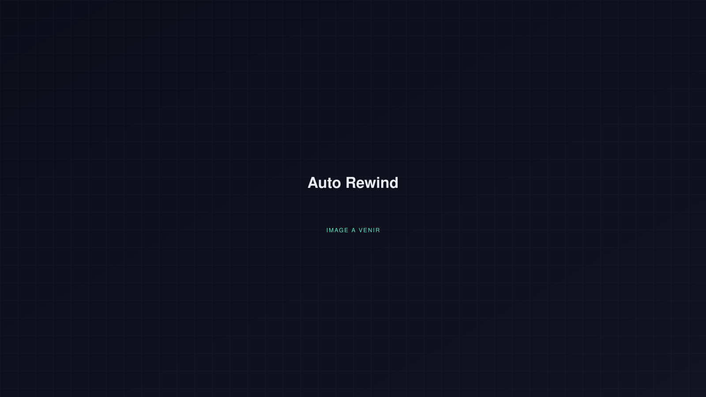

Le projet
Présentation à venir : fonctionnement, technologies utilisées et démonstration d'Auto Rewind seront détaillés ici prochainement.

Développement
Une application qui automatise le montage d'une vidéo récap façon « rewind » de l'année, à raison d'une seconde de vidéo par jour.
Présentation à venir : fonctionnement, technologies utilisées et démonstration d'Auto Rewind seront détaillés ici prochainement.
